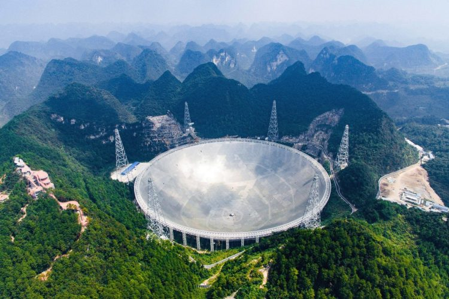

АСТРОНОМИЧЕСКАЯ ОБСЕРВАТОРИЯ КНР
07-2016
Крупнейшая на сегодняшний момент в мире астрономическая обсерватория располагается в отдалении на юго-западе Китая, что значительно осложнило ее строительство. Строительство началось в 2011 году. Стоимость строительства самого крупного радиотелескопа на нашей планете составила 180 млн долларов.
Сооружение телескопа под названием «Сферический радиотелескоп с пятисотметровой апертурой» (FAST). заняло пять лет, в результате инженеры смогли построить 500-метровую тарелку, состоящую из 4400 алюминиевых панелей.
Инженерам и строителям пришлось годами жить в одном из горных ущелий вдали от цивилизации, где в первое время даже не было электричества. Именно это заброшенное место выбрали из 400 вариантов: природная долина в горах на высоте примерно 1000 м над уровнем моря идеально подходила по размеру и являлась естественной защитой от радиочастотных помех.
При этом, не стоит забывать о том, что работа с FAST не лишена проблем — так, основная проблема заключается в хранении невероятно большого количества данных, которые в ближайшие несколько лет соберет этот радиотелескоп.
Согласно Nature, FAST будет сканировать вдвое большую площадь, чем радиотелескоп обсерватории Аресибо в Пуэрто-Рико. Китайский радиотелескоп способен обнаружить даже самые слабые радиоволны, исходящие от небесных объектов, таких как пульсары и целые галактики. Также специалисты не исключают, что он может быть использован для обнаружения далеких миров, на которых может существовать жизнь.